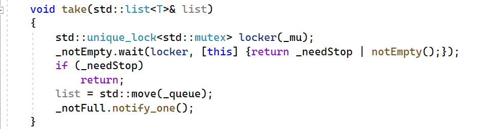

C++学习日志--线程池模型
学习主题: 线程池bug修改
报错的问题原因
内部编译问题
主要是在给条件变量传输一个可调用对象时，定义了一个lambda表达式，在表达式内没有加 ; 结尾，没有捕获 this 指针,即 [this] ，导致一堆语法上的错误
无法解析的外部符号
这个问题还没有完全解决掉，在源文件中实现这个函数会报错，而把相同的代码迁移到头文件中却没有。为了实现申明和实现的分离，尽量还是在源文件中去写实现的代码

线程池的代码写完，总结下来大多数的步骤并不难，如果想让代码块避免竞争加个互斥锁就好了。
线程池的这个架构需要明白，其内部的线程称为异步线程，在整个架构中充当消费者的角色。从同步任务队列当中获取可调用对象并调用；在测试的代码中开辟的两个线程称为同步线程，这两个线程充当生产者的角色，在同步队列中添加任务给异步线程执行。
关键点在于这个同步任务队列的设计，需要使用条件变量来阻塞线程确保队列不溢出、不取空。